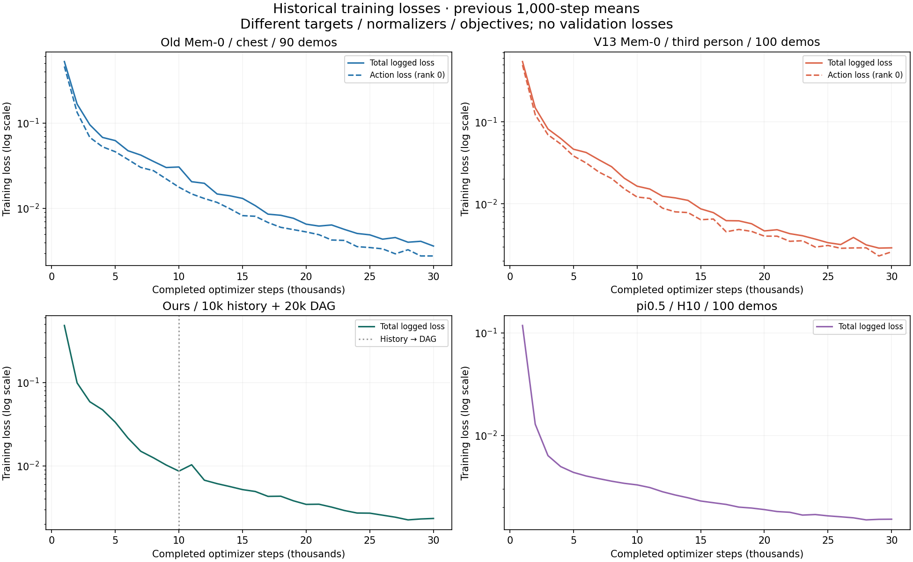
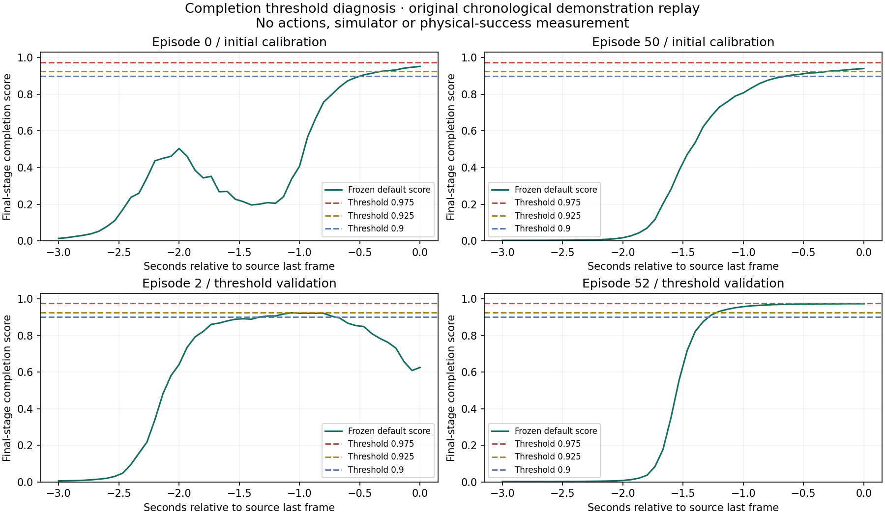

Mem-0 · 20k · 执行4步
失败失败状态：task_timeout_75simsec · 物理阶段 1/3
v13_c20000_h4_left_s262200001
SHA256 06ba17431c196e23e0f7…
SHA256 06ba17431c196e23e0f7…
Mem-0、pi0.5、我们的方法均来自 V13 smooth 的100条第三人称示教。现补充旧chest基线、四组训练loss与切换阈值分析。这里列出20k / 30k权重在4步、8步执行下的已完成结果，并保留成功与失败的原始录像。
| 方法 | 任务训练数据 | 相机输入 | 预测 action chunk |
|---|---|---|---|
| Mem-0 | V13 smooth · 全部100条 100条执行器示教；Planner使用同批V13派生图文标签 | 第三人称 · 单相机 原始RGB 640×480 / 15Hz | 30步 |
| pi0.5 | V13 smooth · 全部100条 100条执行器示教；全局任务文本；不使用Mem-0 Planner | 第三人称 · 单相机 原始RGB 640×480 / 15Hz | 10步 |
| 我们的方法 | V13 smooth · 全部100条 10k全历史预训练＋20k DAG训练；Gen2.1-311和两套三子任务Planner/关键帧来自同批V13 | 第三人称 · 单相机 原始RGB 640×480 / 15Hz | 30步 |
/home/dataset-assist-0/wangpeishuo/safelab_mem/psibot_3_pour_restore_pads_v13_smoothMem-0
数据格式入口（共享盘副本）：/home/dataset-assist-0/wangpeishuo/safelab_mem/psibot_3_pour_restore_pads_v13_smooth_mem0_third_person_ffv1_g1_v1
图像字段：observation.image.head_camera（历史字段名，实际第三人称）
训练交付/配置证据
pi0.5
数据格式入口（共享盘副本）：/home/dataset-assist-0/wangpeishuo/safelab_mem/psibot_3_pour_restore_pads_v13_smooth/lerobot_v21
图像字段：observation.images.third_person
训练交付/配置证据
我们的方法
数据格式入口（共享盘副本）：/home/dataset-assist-0/wangpeishuo/safelab_mem/psibot_3_pour_restore_pads_v13_smooth_mem0_third_person_ffv1_g1_v1
图像字段：observation.image.head_camera（历史字段名，实际第三人称）
训练交付/配置证据
Mem-0与自研方法使用逐帧RGB/时间戳校验的FFV1缓存；缓存中的 head_camera 和接口旧名 chest_rgb 不代表本批实际相机。实际内容均为第三人称。各方法保留各自的归一化统计和训练预处理。上列目录用于识别同批数据格式；训练机本地盘或对象存储副本的挂载前缀可能不同，实际repo_id见配置证据。
| 方法 | checkpoint | 执行4步 | 执行8步 | 正式评测口径 |
|---|---|---|---|---|
| Mem-0 | 20k | 0% （0/100） | 0% （0/100） | 100条/配置 · 左右各50 |
| Mem-0 | 30k | 5% （5/100） | 5% （5/100） | 100条/配置 · 左右各50 |
| pi0.5 | 20k | 0% （0/100） | 0% （0/100） | 100条/配置 · 左右各50 |
| pi0.5 | 30k | 0% （0/100） | 0% （0/100） | 100条/配置 · 左右各50 |
| 我们的方法 | 20k | 暂无正式结果 | 暂无正式结果 | 待补齐自主系统正式100条 |
| 我们的方法 | 30k | 暂无正式结果 | 暂无正式结果 | 待补齐自主系统正式100条 |
4步 / 8步 = 每次重规划前执行4 / 8个15Hz目标，约0.27 / 0.53秒；它们不是扩散去噪步数。Mem-0与我们的方法输出30步，pi0.5输出10步。整项成功必须完成抓取、倾倒、放回原垫并通过物理验收；只完成部分阶段不计成功。
以下是独立校准集，子任务完成切换由环境oracle辅助。它不是自主方法的正式100条测试，不能并入上表。
| 方法 / 权重 | 执行4步 | 执行8步 | 场景数与条件 |
|---|---|---|---|
| 我们的方法 · 20k | 无该配置记录 | 0%（0/32） | 左右各16；A ±1cm；Oracle辅助切换 |
| 我们的方法 · 30k | 无该配置记录 | 0%（0/32） | 左右各16；A ±1cm；Oracle辅助切换 |
旧数据 psibot_3_pour_restore_pads_jitter1cm，真实胸部 chest 单视角。100条示教中执行器训练90条、留出10条；固定种子42，30k步、全局batch448。推理输入原始RGB 640×480、13维实测关节角、15Hz；预测30步，仅执行前4/8步再查询。
| 权重 | 执行步数 | 整任务成功率 | 左侧成功 | 右侧成功 |
|---|---|---|---|---|
| 20k | 4 | 7/100 = 7% | 6/50 | 1/50 |
| 20k | 8 | 20/100 = 20% | 14/50 | 6/50 |
| 30k | 4 | 23/100 = 23% | 13/50 | 10/50 |
| 30k | 8 | 19/100 = 19% | 12/50 | 7/50 |
每组100条，左右各50条；仅A的初始X/Y各±1cm，B与垫子固定。原始100场景名册与V13配对，但模型、相机、数据和版本包不同，不能把差值全部归因于相机。旧结果包含365条原单环境F、8条恢复R、24条多环境和3条验证前缀，均通过相应验收；不与V13 N4结果冒充单变量对照。
最终已验收400/400；排除8条错误场景记录，不计为模型失败。本次加入各权重×4/8步的成功与失败原胸部视频各一段，共8段。最终完整账本汇总 · 旧chest训练配置 · 旧chest成功率CSV · 视频来源与SHA
四次训练的原始日志均已找到并逐步解析。表中每点取此前1000训练步内的日志均值；Mem-0/自研每20步记录一次（50个点），pi0.5每10步的正式日志（100个点，不重复统计进度条）。

| 训练步数 | 旧 Mem-0 总 / 动作 | V13 Mem-0 总 / 动作 | 自研 总 / 动作 | pi0.5 日志 loss |
|---|---|---|---|---|
| 5k | 0.06219 / 0.04606 | 0.04641 / 0.03843 | 0.03335 / 0.03318 | 0.00437 |
| 10k | 0.03054 / 0.01774 | 0.01641 / 0.01210 | 0.00864 / 0.00840 | 0.00330 |
| 20k | 0.00655 / 0.00531 | 0.00466 / 0.00403 | 0.00344 / 0.00325 | 0.00189 |
| 30k | 0.00363 / 0.00278 | 0.00290 / 0.00259 | 0.00233 / 0.00214 | 0.00153 |
Mem-0：总loss为8卡均值；动作与分类器分项为rank0日志，分类器权重0.2。因此总loss不要求等于表中两个分项之和。自研：本图为执行器，原生分类器关闭；前10k全历史、后20k DAG，独立Gen完成/状态头与Planner的loss不包含在内。pi0.5：rank0上每个日志区间的平均masked action loss（并非8卡all-reduce均值），H10、quantile归一化，不能与H30 Mem-0的minmax流匹配loss横向比较大小。所有日志均为训练loss，不能冒充验证loss。
已确认：新版确实更好地拟合了它自己的训练目标；这不等于它在接触、倾倒、放回的闭环状态上更可靠。现有证据尚不能把整体下降归结为一个单独原因。
30k附近，新版总loss比旧版低约20%，rank0动作分项只低约6.9%；两者均不是闭环成功率。
① 尺子改变了。两个Mem-0分别计算各自数据的minmax。例：第5个手臂关节目标范围从1.447变为1.972rad；同样0.01rad误差，其归一化平方误差约为旧版的54%。这说明loss数值并非相同物理精度标尺，不能用总loss下降20%推出控制精度提高20%。流匹配loss也不是最终动作的弧度RMSE，不能直接按此比例换算。
② 训练帧预测与连续执行不同。原训练观测上的离线检查中，8步动作的手臂RMSE中位数：旧版0.008057rad、新版0.008045rad，几乎相同；但新模型的预测加速度约2.003rad/s²，示教仅0.197rad/s²。这是两条训练示教上的诊断，不是独立泛化分数，却直接说明“小loss”没有自动约束轨迹导数和平滑性。
③ 误差在物理闭环累积。已有V13诊断记录出现抓持相对滑动、杯体倾斜而手腕旋转不足、倾倒后仍停在旧子任务、放回不直立或稳定性计时重置。低平均训练误差可以掩盖这些少量关键时刻；当前没有验证loss支持“过拟合”定论，也没有相机单变量实验支持“第三人称就是唯一原因”。
④ 切换阈值是可分离的问题。自研默认0.975有结束漏触发证据；但先前20k/30k各0/32是Oracle代替完成判定的物理校准，已经绕开这个阈值，故降低阈值不能解释或修复那组物理失败。下方独立列出阈值校准结果，不能将识别完成率当作整任务成功率。
默认0.975确实过于严格地挡住了这些示教的最后结束事件，但它不是全部物理失败的原因。保留原权重、RGB预处理、13维关节、原始逐帧顺序、累计2次正判定；两帧warmup后开始判定。未用GT强制切换；Planner只在模型自己确认切换后提供下一个真实任务文本。

| 设置 | 校准示教0 / 50 | 另两条示教2 / 52 | 结论 |
|---|---|---|---|
| 默认全阶段0.975 | 两条均完成前2次切换；最后事件0/2 | 最后事件0/2 | 有结束漏判证据 |
| 全阶段0.925 仅按0/50从预定网格选出 | 最后事件2/2；均比末帧早3帧 | 最后事件1/2；另一条提前17帧 | 未通过独立阈值验证；不正式替换 |
| 分阶段实验设置 前2阶段0.975，最后0.90 | 最后事件2/2；早6 / 8帧 | 最后事件2/2；早19 / 18帧 | 前2阶段输出逐行完全相同；4/4可触发，但仍未通过预设时间窗口 |
预先定义的诊断标准是三次事件均在源分段边界/末帧±15帧内。分阶段设置已经在独立推理目录实际运行，未修改共享推理服务或正式默认。0.925统一阈值存在反例，0.90收尾配置仍是实验候选，不能宣称已经找到可靠的生产阈值。
这里的4/4是示教重放的“结束事件触发数”，不是4/4物理成功。全部4条均参与过分类器训练；2/52只是对第一次阈值选择留出的示教，不是模型泛化测试。录像末帧也不是独立物理完成真值，提前1.2–1.27秒是否过早还需真实闭环状态证据。已有Oracle 0/32绕开了原阈值，所以那组抓取/倾倒失败不能归因于0.975。
视频用于观察具体行为，不按视频样本比例估计成功率。正式案例按固定场景顺序选取：失败取各配置第一个左侧案例；Mem-0 30k的4步/8步成功分别选一个左侧/右侧案例。自研校准视频选择20k左侧、30k右侧各一条。单段案例不覆盖全部失败模式。
失败状态：task_timeout_75simsec · 物理阶段 1/3
失败状态：task_timeout_75simsec · 物理阶段 1/3
整项任务验收通过 · 物理阶段 3/3
失败状态：physical_or_policy_failure · 物理阶段 1/3
整项任务验收通过 · 物理阶段 3/3
失败状态：physical_or_policy_failure · 物理阶段 1/3
失败状态：physical_or_policy_failure · 物理阶段 0/3
失败状态：physical_or_policy_failure · 物理阶段 0/3
失败状态：task_timeout_75simsec · 物理阶段 0/3
失败状态：physical_or_policy_failure · 物理阶段 0/3
失败状态：physical_or_policy_failure · 物理阶段 1/3
失败状态：physical_or_policy_failure · 物理阶段 0/3
抓起、倾倒、放回全部通过
已稳定抓起，未达到倾倒验收
抓起、倾倒、放回全部通过
已稳定抓起，未达到倾倒验收
抓起、倾倒、放回全部通过
已达到倾倒验收，未完成放回稳定验收
抓起、倾倒、放回全部通过
已稳定抓起，未达到倾倒验收
每段视频都绑定原始RESULT.json、场景种子和文件SHA256。已核对视频帧数、15Hz时间基、640×480尺寸，并完整解码新增8段旧视频及原12段V13视频。本在线子面板按需加载原视频，可下载CSV表格、原视频与案例JSON。